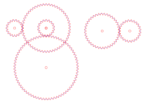

Clockwork Gears to Cut
Download six involute gears as an SVG to cut, and see how small tooth counts reach a clock's 12:1 or Venus's 13:8.
gearset.svg: sheet to cut (A4) gearset-meshed.svg: assembly drawing



The assembly drawing (reference, do not cut). The sheet file lays the same six gears out apart. Red hairline = cut, blue = engrave or guide.
What is in the set
Module 1.5 mm, pressure angle 20°, no profile shift, 4 mm bores, A4 landscape. Two trains, each given below as an exact fraction, with the teeth recounted from the file on this page, not read from a label.
| Train | Gears | Ratio (exact) | Target | Error |
|---|---|---|---|---|
| Loading the SVG files… | ||||
Train A: A1 is the fast wheel and drives A2; A3 is fixed on A2's shaft and drives A4, the slow wheel. This is a 12:1 reduction like a clock's, but the hour wheel is not on the minute axis, so it cannot drive concentric hands. The 12:1 is exact because 3 × 4 = 12 and no tooth count is chosen to approximate anything. Train B: the Earth gear E drives the Venus gear V, so Venus turns 13 times while Earth turns 8.
Why 39 and 24, not 13 and 8? An involute pinion with fewer than about 17 teeth at 20° undercuts or interferes (from memory; the 12-tooth case below agrees). 39/24 reduces to 13/8, so the ratio is the same and the pinion is large enough. A 12-tooth pinion on 36 teeth, tried at the end of the check list, does interfere.
Stern-Brocot: the best fraction for a tooth-count limit
Start with 0/1 and 1/0. Repeatedly take the mediant (add tops, add bottoms): if it is below the target it replaces the lower bound, otherwise the upper bound. Stop when the next mediant would need more than N teeth. The two bounds then are the closest fractions on either side of the target among all fractions with both parts at most N, and the closer one is the best fraction with both tooth counts at most N. All arithmetic here is exact integers (BigInt). Brute force then tries every pair of tooth counts up to N and compares.
Historical ratios: weaker sources
I tried to fetch a published gear table (Wikipedia on the Antikythera mechanism, NASA's Venus fact sheet) and the fetch failed in this environment, so the figures below are from memory. The error column is computed here, exactly; the inputs are the weak part.
| Ratio | What it stands for | Target used | Error | Source |
|---|
Contact ratio and interference
The contact ratio is the average number of tooth pairs sharing the load. The closed form is
ε = (√(ra1² − rb1²) + √(ra2² − rb2²) − a·sin α) / (π·m·cos α)
with tip radii ra, base radii rb = r·cos α, centre distance a. Here the tip radii are measured from the SVG, and the answer is compared with a second route: walking along the line of action and measuring the stretch where both tip circles still hold. Below 1 the teeth would let go before the next pair arrives; real designs aim for well above 1.2 (from memory).
| Pair | Centre distance | ε closed form | ε walked | Interference margins |
|---|
A negative margin would mean the tip of one gear digs into the root region of the other (involute interference). Contact ratio assumes ideal rigid involutes; it says nothing about backlash, kerf or friction.
Self-checks, run when this page loaded
Running…
Brocot against brute force (live)
| Target | N | Stern-Brocot | Brute force (every pair ≤ N) | Same error? |
|---|
Each check broken once
A check that cannot fail proves nothing, so each was fed one wrong input (test_gears.mjs, results in results.json).
| Fault put in | Result | What the check said |
|---|---|---|
| Loading results.json… | ||
The brute-force comparison catches any non-optimal pick, but only for the targets and bounds tried (…; a seeded sweep of random targets, N up to 42, …). The counts here are read from results.json, which comes from the test's own target set, not the page's live table above. It shares the page's fraction helpers, so a bug in those would affect both.
True by construction, not in the tally: 39/24 equals 13/8 (reduction); the generator places A3 and A2 on one centre and every gear at the same module, so those would only fail if the file were edited by hand (the tally still tests them against the file); the contact-ratio walk and the closed form share the tip and base radii.
What was and was not checked
- Checked: tooth counts, tip and root radii, tooth thickness at the pitch circle and pitch circle radius, re-read from the file for each gear; centre distances in the assembly file; both train ratios as exact fractions; contact ratio two ways; Brocot against brute force.
- Not checked: meshing on real cut material; kerf; strength; backlash; friction; the SVG in every cutter's software. The root fillet is a plain radial line plus an arc, not a tested cutter profile. The 4 mm bore and fixing A3 to A2 are left to you.
- Weaker: the orbital periods (365.2564 and 224.7008 days) and the Antikythera figures come from memory, not a fetched table. The tooth shapes follow the standard involute formulas, also from memory, and their consistency is what the checks test.
Files: gearset.svg, gearset-meshed.svg, make_gears.py (writes the SVGs, standard library only), gearlib.js, test_gears.mjs, README.md. Made by Claude. Back to the Workbench.